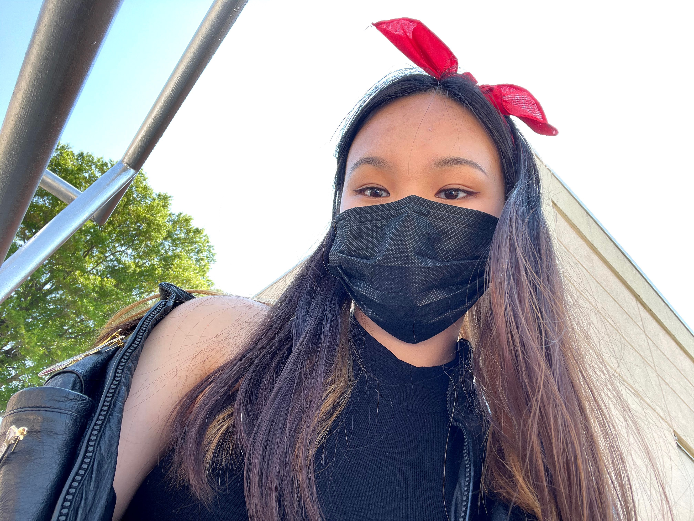

hannah curley
about me

- Hannah Curley, age 19
- Undeclared, first-year undergrad at Eugene Lang College of Liberal Arts
- Strayed towards Power Rangers, Pokemon, and Beyblade rather than the societal norms of Barbie dolls and My Little Pony
- Woke up consistently to watch Power Rangers, especially when they aired older seasons on Fox’s 4Kids Entertainment Channel
- Reignited her interest after Power Rangers Samurai debuted in 2011
- Actively researched the lore and spent hours dedicated to the characters
- Even watched an Australian soap opera because she had a crush on an actor
- Favorite Season
- Jungle Fury (2008)
- Favorite Red Ranger
- Casey Rhoades, Jungle Fury Red Ranger
- Favorite Sixth Ranger
- Antonio, Gold Samurai Ranger from Power Rangers Samurai (2011)